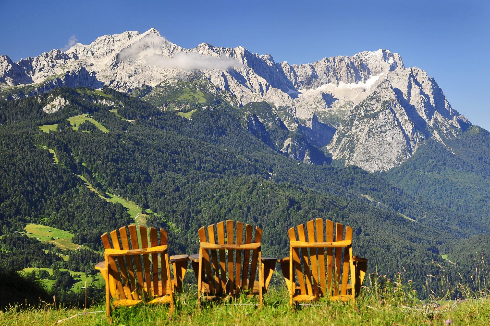

Call for Papers
The third edition of the AFS takes place from Sunday, August 23 to Tuesday, August 25, 2026.
About the conference
The Alpine Finance Summit (AFS) is an exclusive and high-caliber conference devoted to the presentation and discussion of academic finance working papers.
It is jointly organized by professors of the University of Augsburg (Germany), University of Innsbruck (Austria), University of Liechtenstein (Liechtenstein), and University of Neuchâtel (Switzerland). The third edition of the AFS will take place in Garmisch-Partenkirchen (Germany) from Sunday, August 23rd to Tuesday, August 25th, 2026.
Academic keynote speaker of the AFS 2026 will be Prof. Richard B. Evans from the University of Virginia Darden School of Business.
Research focus
The scientific focus of the conference lies on research in the areas of Asset Pricing, Investments, Sustainable Finance, and FinTech. We welcome empirical, experimental, and theoretical contributions which have not been published in a scientific journal.
Date and venue
Harmonizing the enjoyable with the practical. Delving into top-tier research papers, networking, and enjoying the Alpine landscape. The Alpine Finance Summit is traditionally held in the Alpine regions with the 2026 edition set in Garmisch-Partenkirchen (Germany).
Social program
Particular focus is devoted to a social program for summer outdoor activities, such as hiking, trail running, or climbing on a via ferrata. These activities will be organized during the conference and all conference participants are encouraged to participate. See the activities.
Conference fee
The conference fee is 390 EUR per participant. It includes
- lunch and coffee breaks on the first and second conference day
- the conference dinner
- public and mountain transportation on the second conference day
- a coffee break on the third conference day
Paper submission
Submit your full-scaled working paper at conftool.com/alpinefinancesummit2026.
Selection of papers is determined via a blind-review process, hence author identities must be concealed at submission. Authors are allowed to submit more than one paper. There is a submission fee of EUR 50 per paper.
Authors will be informed of the outcome following the completion of the review process, expected by mid-May 2026.
Dual Submission Option
Submitting authors are invited to take advantage of the Dual Submission Option with The Review of Asset Pricing Studies at no additional charge.
This unique opportunity allows submissions to be considered simultaneously for the conference and for publication and can be selected directly during the paper submission process.
More information is available at the Society for Financial Studies — Dual Submission Policy.